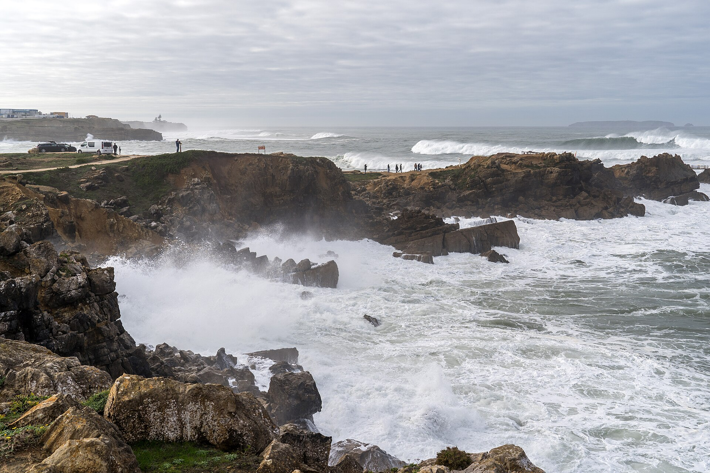

A World Surf League chega a Portugal para uma das etapas mais tradicionais e exigentes do Championship Tour. O MEO Rip Curl Pro está programado para acontecer entre os dias 16 e 25 de outubro, em Peniche, com a organização da WSL escolhendo os melhores dias de condições do mar para realização das baterias dentro dessa janela de 10 dias, e reunindo a elite do surfe mundial em um momento importante da corrida pelos títulos masculino e feminino.
A competição será à décima etapa da temporada e tem um significado especial no calendário dessa temporada: será a primeira prova realizada após o corte de competidores, estabelecido ao término das nove etapas da fase regular. Com um grupo reduzido de atletas, cada bateria ganha importância na disputa pelas primeiras posições do ranking.
A edição de 2026 também marca o retorno da etapa portuguesa ao mês de outubro. A mudança ocorreu após ajustes no calendário internacional, incluindo a entrada do Philippines Pro, em Cloud 9, nas Filipinas.
O Brasil terá oito representantes em Peniche, com Yago Dora, campeão mundial de 2025 e líder da classificação masculina na chegada ao evento.
Previsão das ondas em Supertubos para os três primeiros dias
A previsão indica ondas consistentes, com possibilidade de boas condições para a realização das baterias.
Os modelos consultados apontam aumento da ondulação durante o fim de semana, com destaque para o sábado, dia 17, pela combinação prevista de tamanho, período e direção do vento.
- Sexta-feira, 16 de outubro — 1,96 metro de altura
- Sábado, 17 de outubro — 2,34 metros de altura
- Domingo, 18 de outubro — 2,44 metros de altura
Vento, período e qualidade das ondas
Sexta-feira, 16 de outubro: indica ondulação de oeste/noroeste, com períodos previstos entre 11 e 13 segundos e vento predominante de norte/nordeste, com componente terral. É um cenário que pode oferecer boas condições para tubos já na abertura da janela.
Sábado, 17 de outubro: é o dia mais promissor para a qualidade do surfe. O modelo destaca as 7h locais (3h de Brasília), com ondas estimadas em 2,1 metros, período de 13 segundos, ondulação de noroeste e vento cruzado-terral. Esse horário corresponde a uma previsão das condições do mar, não à programação de baterias da WSL.
Domingo, 18 de outubro: o modelo marítimo indica ondas ainda expressivas, mas com menor energia e períodos mais curtos que no sábado. Portanto, tamanho não significa necessariamente melhor formação dos tubos.
A tendência atual então é favorável à presença de ondas já nos primeiros dias da janela, especialmente na sexta-feira e no sábado. Ainda assim, não é possível assegurar que a WSL autorizará a competição nesses dias.
Os brasileiros confirmados para a competição
A delegação brasileira conta com sete representantes na categoria masculina e uma na feminina.
Entre os homens, Yago Dora chega à competição ocupando a liderança do ranking mundial. O atual campeão do mundo também possui uma ligação especial com Peniche, onde conquistou o título da etapa em 2025.
Italo Ferreira ocupa a terceira colocação na chegada ao evento, seguido por Miguel Pupo, em quarto, e Gabriel Medina, em quinto.
Filipe Toledo, João Chianca e Samuel Pupo completam a representação masculina. No feminino, Luana Silva será a brasileira na disputa.
Ranking mundial da WSL 2026: masculino e feminino
Classificação do Championship Tour após a nona etapa, em Trestles, nos Estados Unidos.
A relação apresenta os 22 homens e as 14 mulheres que passaram pelo corte da temporada, em ordem de classificação e com suas respectivas pontuações.
Masculino:
- Yago Dora (Brasil) — 42.780 pontos
- Leonardo Fioravanti (Itália) — 40.015 pontos
- Italo Ferreira (Brasil) — 39.930 pontos
- Miguel Pupo (Brasil) — 39.450 pontos
- Gabriel Medina (Brasil) — 35.410 pontos
- Griffin Colapinto (Estados Unidos) — 33.695 pontos
- Kanoa Igarashi (Japão) — 31.910 pontos
- Ethan Ewing (Austrália) — 30.895 pontos
- Samuel Pupo (Brasil) — 27.960 pontos
- George Pittar (Austrália) — 26.705 pontos
- Kauli Vaast (França) — 26.620 pontos
- Liam O'Brien (Austrália) — 26.005 pontos
- Cole Houshmand (Estados Unidos) — 24.830 pontos
- Jack Robinson (Austrália) — 24.665 pontos
- Marco Mignot (França) — 23.770 pontos
- Callum Robson (Austrália) — 22.875 pontos
- Connor O'Leary (Japão) — 22.185 pontos
- Morgan Cibilic (Austrália) — 19.865 pontos
- João Chianca (Brasil) — 19.045 pontos
- Seth Moniz (Havaí) — 18.320 pontos
- Filipe Toledo (Brasil) — 18.150 pontos
- Jake Marshall (Estados Unidos) — 17.705 pontos
Feminino:
- Gabriela Bryan (Havaí) — 42.865 pontos
- Carissa Moore (Havaí) — 42.320 pontos
- Sawyer Lindblad (Estados Unidos) — 40.055 pontos
- Molly Picklum (Austrália) — 38.950 pontos
- Erin Brooks (Canadá) — 38.000 pontos
- Luana Silva (Brasil) — 36.580 pontos
- Caitlin Simmers (Estados Unidos) — 31.810 pontos
- Lakey Peterson (Estados Unidos) — 30.235 pontos
- Isabella Nichols (Austrália) — 27.970 pontos
- Caroline Marks (Estados Unidos) — 26.320 pontos
- Nadia Erostarbe (Espanha) — 23.915 pontos
- Bettylou Sakura Johnson (Havaí) — 22.575 pontos
- Tyler Wright (Austrália) — 20.545 pontos
- Yolanda Hopkins (Portugal) — 19.830 pontos
Convidados e substituições para a etapa
Além dos surfistas classificados pelo ranking, o MEO Rip Curl Pro Portugal terá participantes convidados.
Masculino:
- Frederico Morais (Portugal) — wildcard.
- Guilherme Ribeiro (Portugal) — wildcard.
Feminino:
- Francisca Veselko (Portugal) — wildcard.
- Johanne Defay (França) — wildcard.
- Teresa Bonvalot (Portugal) — substitui Isabella Nichols, que está fora por lesão.
A classificação mundial que definiu a chegada dos surfistas a Peniche foi estabelecida após a nona etapa, disputada em Lower Trestles, na Califórnia. Na ocasião, Miguel Pupo conquistou o título masculino, enquanto Erin Brooks venceu a competição feminina e alcançou sua terceira vitória consecutiva na temporada. Yago Dora, mesmo eliminado na semifinal, manteve a liderança mundial. O título de Miguel Pupo e os resultados completos da WSL em Trestles 2026 ajudam a entender como a última etapa da fase regular definiu o ranking e os classificados para a disputa em Portugal.
Baterias dos brasileiros confirmadas
O chaveamento divulgado para o MEO Rip Curl Pro Portugal estabelece confrontos diretos desde a abertura. Parte dos atletas masculinos entra na primeira rodada, enquanto os oito melhores cabeças de chave começam no segundo round.
- João Chianca — enfrenta Jack Robinson, no Round 1.
- Filipe Toledo — enfrenta Liam O'Brien, no Round 1.
- Samuel Pupo — enfrenta Frederico Morais, no Round 1.
- Luana Silva — enfrenta Bettylou Sakura Johnson, no Round 1 feminino.
- Gabriel Medina — enfrenta, no Round 2, o vencedor de Filipe Toledo contra Liam O'Brien.
- Italo Ferreira — enfrenta, no Round 2, o vencedor de Jack Robinson contra João Chianca.
- Yago Dora — enfrenta, no Round 2, o vencedor de Callum Robson contra Connor O'Leary.
- Miguel Pupo — enfrenta, no Round 2, o vencedor de Cole Houshmand contra Seth Moniz.
Um dos cenários mais interessantes do chaveamento é a possibilidade de confronto brasileiro entre Gabriel Medina e Filipe Toledo logo na segunda rodada. Para isso, Filipinho precisa vencer sua bateria de abertura contra Liam O'Brien.
O encontro reuniria dois surfistas que somam cinco títulos mundiais: três de Medina e dois de Toledo. Também há possibilidade de confronto brasileiro envolvendo Italo Ferreira e João Chianca, caso Chumbinho supere Jack Robinson na estreia.
O novo formato do Championship Tour em 2026
A temporada deste ano trouxe mudanças importantes ao sistema de disputa da World Surf League. Uma das principais alterações foi o fim da decisão do título mundial pelo antigo formato do WSL Finals, que reunia cinco surfistas em um evento específico.
O campeonato voltou a valorizar a classificação por pontos acumulados, com o encerramento da temporada em Pipeline, no Havaí.
As nove primeiras etapas formam a temporada regular. Após esse período, o circuito passa por uma redução no número de atletas para os eventos de pós-temporada.
Em Portugal, o formato prevê 22 homens classificados pelo ranking e dois convidados, totalizando 24 competidores masculinos. No feminino, são 14 classificadas e duas convidadas, formando um grupo de 16 surfistas.
A competição masculina começa com oito baterias de dois atletas na primeira rodada. Os vencedores avançam para enfrentar os oito cabeças de chave que já estão posicionados no segundo round.
No feminino, as 16 participantes entram em ação na primeira rodada, também em confrontos individuais. As vencedoras avançam diretamente às quartas de final.
Não há repescagem neste modelo: perder uma bateria significa a eliminação da etapa.
A reformulação busca aumentar o peso competitivo de cada confronto. O desempenho na fase regular influencia tanto a permanência na disputa quanto o posicionamento dos surfistas nas chaves dos eventos seguintes.
O retrospecto brasileiro em Peniche
O Brasil possui resultados expressivos na história da etapa portuguesa, com títulos de diferentes gerações da Brazilian Storm.
Italo Ferreira foi campeão em Peniche em 2018 e 2019, consolidando sua identificação com o evento. Filipe Toledo também conquistou a etapa portuguesa, em 2015.
Na edição de 2025, o protagonismo brasileiro voltou a aparecer com uma final inteiramente nacional entre Yago Dora e Italo Ferreira.
Yago venceu a decisão por 13,37 a 12,43 pontos, garantindo o título em uma bateria equilibrada, marcada principalmente pela execução de manobras aéreas.
Entre as mulheres, a americana Caroline Marks conquistou o título de 2025 ao derrotar Gabriela Bryan, do Havaí, por 7,90 a 6,97 na final.
Onde assistir à etapa ao vivo
A transmissão do MEO Rip Curl Pro Portugal 2026 está prevista para os canais sportv, e pelo canal oficial da WSL no YouTube.
A primeira chamada para abertura do evento indica o horário de 8h em Portugal, correspondente às 4h da manhã de sexta-feira, 16 de outubro, pelo horário de Brasília. Mas a realização das baterias depende da programação da organização e das condições do mar.
Uma das ondas mais importantes da WSL
A Praia de Supertubos, localizada em Peniche, ganhou reconhecimento internacional pela qualidade e pela potência de suas ondas tubulares. O pico é conhecido por formar ondas rápidas, ocas e pesadas, capazes de proporcionar tubos tanto para a esquerda quanto para a direita.
Diferentemente de ondas que quebram sobre recifes de coral ou formações rochosas, Supertubos é um beach break, com ondas que quebram sobre bancos de areia. A configuração do fundo, combinada com a direção da ondulação e as condições do vento, influencia diretamente a formação das paredes e dos tubos.
Em dias de condições favoráveis, os surfistas encontram oportunidades para executar manobras de alto grau de dificuldade. Entretanto, o mesmo pico também pode apresentar ondas fechando rapidamente, exigindo precisão na escolha das oportunidades e velocidade de reação. Essa característica transforma Peniche em um teste de leitura do mar.
A etapa portuguesa faz parte do circuito de elite desde 2009 e construiu uma história marcada por performances de grandes nomes do surfe mundial, incluindo campeões brasileiros.
A disputa pelo título mundial
A etapa de Peniche ocupa uma posição estratégica na reta final do Championship Tour 2026.
Depois de nove eventos de temporada regular, o circuito chega a Portugal com um grupo mais restrito de competidores e uma diferença importante em relação aos anos anteriores: a luta pelo título não será resolvida por uma final independente entre cinco atletas.
Os resultados de Portugal e da etapa seguinte podem alterar a classificação antes da decisão do campeonato no Havaí.
O evento de Pipeline terá peso especial no sistema de pontuação, com 15 mil pontos destinados aos vencedores, valor equivalente a uma vez e meia a pontuação de vitória em uma etapa convencional do Championship Tour.
Isso significa que a vantagem construída ao longo da temporada será importante, mas ainda haverá uma quantidade expressiva de pontos em disputa no encerramento do calendário.
Para os brasileiros, o cenário envolve situações diferentes. Yago Dora defende sua posição na liderança, enquanto Italo Ferreira, Miguel Pupo e Gabriel Medina buscam resultados que melhorem suas condições na corrida pelo título.
Filipe Toledo, João Chianca e Samuel Pupo também encontram em Portugal uma oportunidade de avançar no ranking e conquistar um resultado importante contra adversários da elite.
No feminino, Luana Silva representa o Brasil em uma competição na qual cada vitória pode significar avanço expressivo na classificação da etapa e na pontuação do campeonato.
As próximas etapas da WSL depois de Portugal
O calendário de 2026 estabelece mais duas paradas após o MEO Rip Curl Pro.
A primeira será o Philippines Pro, programado para acontecer entre 31 de outubro e 10 de novembro, nas ondas de Cloud 9, em Siargao, nas Filipinas.
O encerramento do Championship Tour está previsto para o Lexus Pipe Masters, entre 8 e 20 de dezembro, em Pipeline, na ilha de Oahu, no Havaí.
A prova inicialmente prevista para Abu Dhabi, nos Emirados Árabes Unidos, foi cancelada, deixando Portugal e Filipinas como as duas etapas com grupo reduzido antes do encerramento havaiano.
Com isso, a etapa portuguesa ganha um papel ainda mais importante na reta final da temporada. Trata-se de uma das últimas oportunidades de os surfistas acumularem pontos antes do reencontro de todos os competidores no Pipe Masters.
Em um campeonato decidido pela regularidade e pela pontuação acumulada, uma boa campanha em Peniche pode representar uma vantagem valiosa na disputa mundial. E, em uma onda conhecida pela dificuldade de execução e pela imprevisibilidade das condições, cada bateria terá potencial para mudar os rumos da temporada.